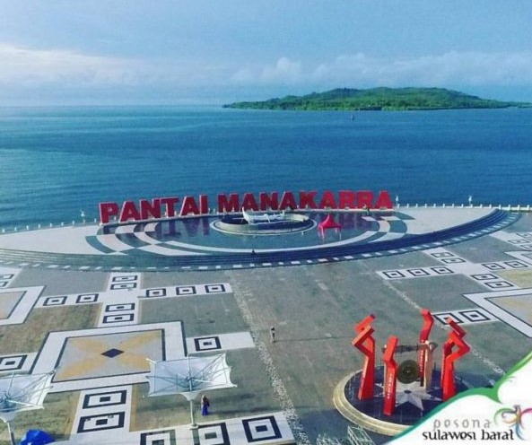
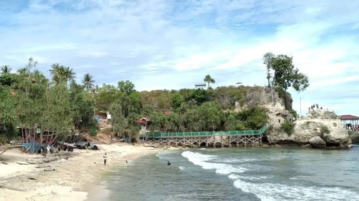

Pilihan Destinasi Wisata
Kenali beberapa tempat menarik di Sulawesi Barat.

Pantai Manakarra
Pantai Manakarra merupakan salah satu destinasi wisata di Mamuju, Sulawesi Barat. Pantai Manakarra menjadi salah satu tempat yang dapat dikunjungi untuk menikmati suasana pesisir dan pemandangan laut.

Pantai Dato
Pantai Dato merupakan destinasi wisata di Kabupaten Majene, Sulawesi Barat, yang terkenal dengan pemandangan laut, batu karang, dan suasana pantainya.

Wisata Budaya Mandar
Wisata Budaya Mandar memperkenalkan adat istiadat, rumah adat, pakaian tradisional, dan tradisi masyarakat Mandar di Sulawesi Barat.
Lihat Detail